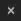
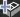
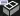
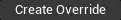
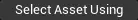
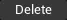
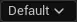
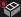

Importing Assets using FBX Files#
Importing FBX via Import Into Level#
Using Import Into Level method will also create FbxSceneImportData asset.
Tip
 button on tabs does not work.
Note
As of version 5.1, importing static meshes with custom collision will also create collision actors in the level for some reason. Collision is imported properly.
Scene Tab#
Outline of the scene in source file will be listed on the left side. Outline contains every asset and group contained in source file.
To exclude assets or groups from importing, untick them in their category. Unticking in scene tab won’t change anything
Use expand/collapse buttons to quickly show all assets#
Blender Tip
Files imported from blender will not be grouped as blender uses –Collections– instead.
To create fake groups in blender, parent assets to an empty and name it as you wish. Empties do not have to share same collection as assets.
While importing FbxSceneImportData asset will be created, which only purpose is to allow reimporting or adding new assets from single source file.
Import Options#
Meshes#
Texture#
Static Meshes Tab#
Unticking elements in this tab will exclude them from importing. You can also select multiple meshes and press RightMouseButton to add or remove them from importing.
Static meshes tab supports Setting Sets
Reimporting
If window was opened to reimport the file, new and deleted files from source FBX file will be marked with  or 
Files removed from FBX file will be also removed from Unreal Engine project. In order to not remove them, simply untick them.
All items#
Mesh Import Vertex Color Import Option
Mesh Import Build Reversed Index Buffer
Mesh Import Generate Lightmap UVs
Skeletal Meshes Tab#
Skeletal meshes tab supports Setting Sets
Skeletal Mesh Tab#
Mesh Import Preserve Smoothing Groups
Mesh Import Morph Target Thresholds
Animation Tab#
Mesh Import Use Default Sample Rate
Mesh Import Import Attributes as Curves or Animation
Mesh Import Preserve Local Transform
Materials Tab#
Unticking any material in this tab will exclude it from importing (or deleting if material was deleted from FBX file after previous import to Unreal Engine)
Material path override#
Materials can be imported into different directory.
All of imported materaials will be placed in one directory. Subdirectories won’t be created even when Create Content Folder Hierarchy is ticked in Mesh Import FBXImport Static Meshes
Setting Sets#
If multiple of static or skeletal meshes share same import settings, you can use Settings Sets to configure importing faster.
Use  and name your new settings set.
After adding a new setting set, press RightMouseButton on selected static/skeletal meshes and pick new settings set from the context menu.
LeftMouseButton+Ctrl to select multiple meshes.
To select all static meshes using custom settings set, press .
To remove custom settings set press 
To preview or modify settings set, but not apply it to the mesh use 
Assets with custom settings set will be marked as 
FbxSceneImportData#
FbxSceneImportData asset purpose is to provide functionality of reimporting, adding and removing assets from single FBX file.
It is created automatically while importing into level
Tip
If Create Content Folder Hierarchy was checked, new folders might not show up in asset browser on reimporting.
Creating these folders manually, using Save All or restarting editor will fix the issue.
Tip
If Create Content Folder Hierarchy was checked, assets might temporarily be visible in asset browser as if this option was unchecked. Refreshing asset browser will fix the issue.